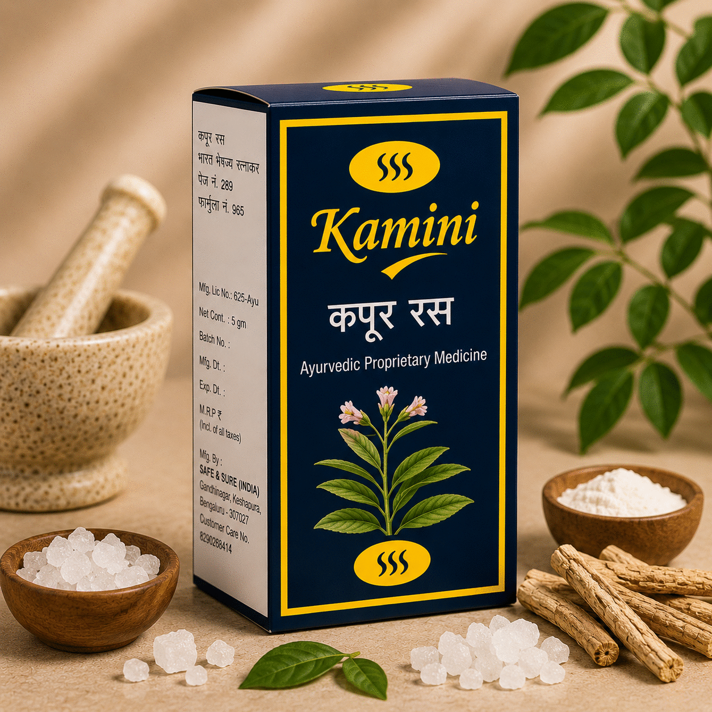
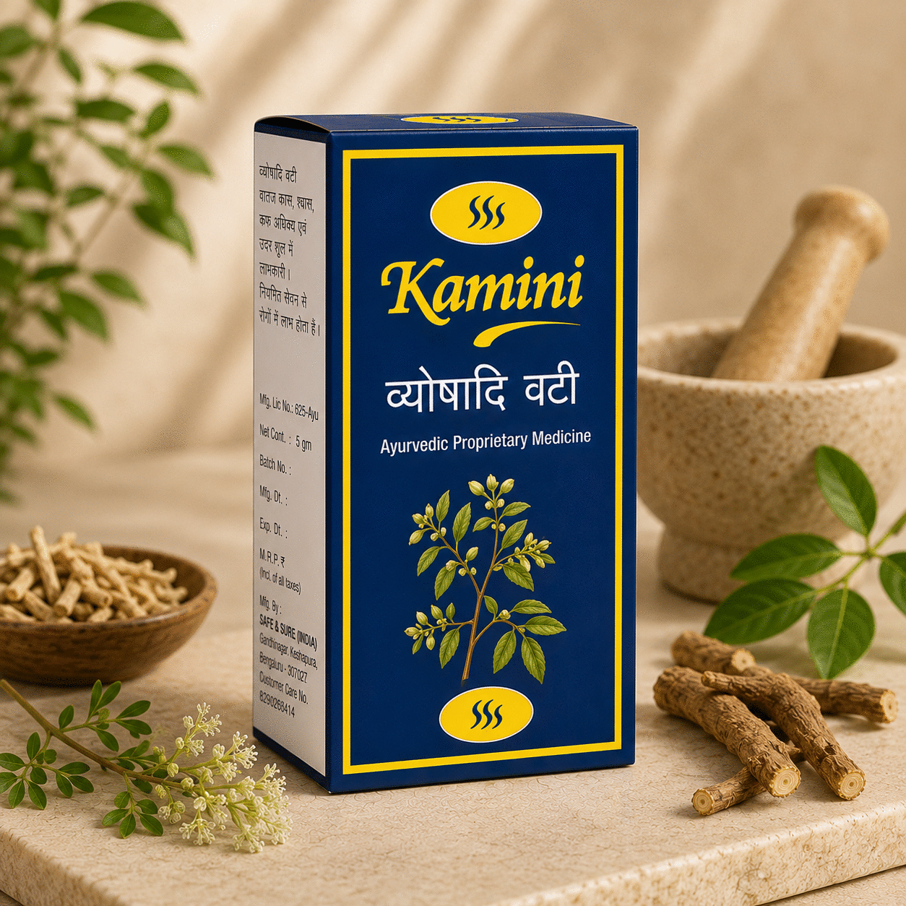
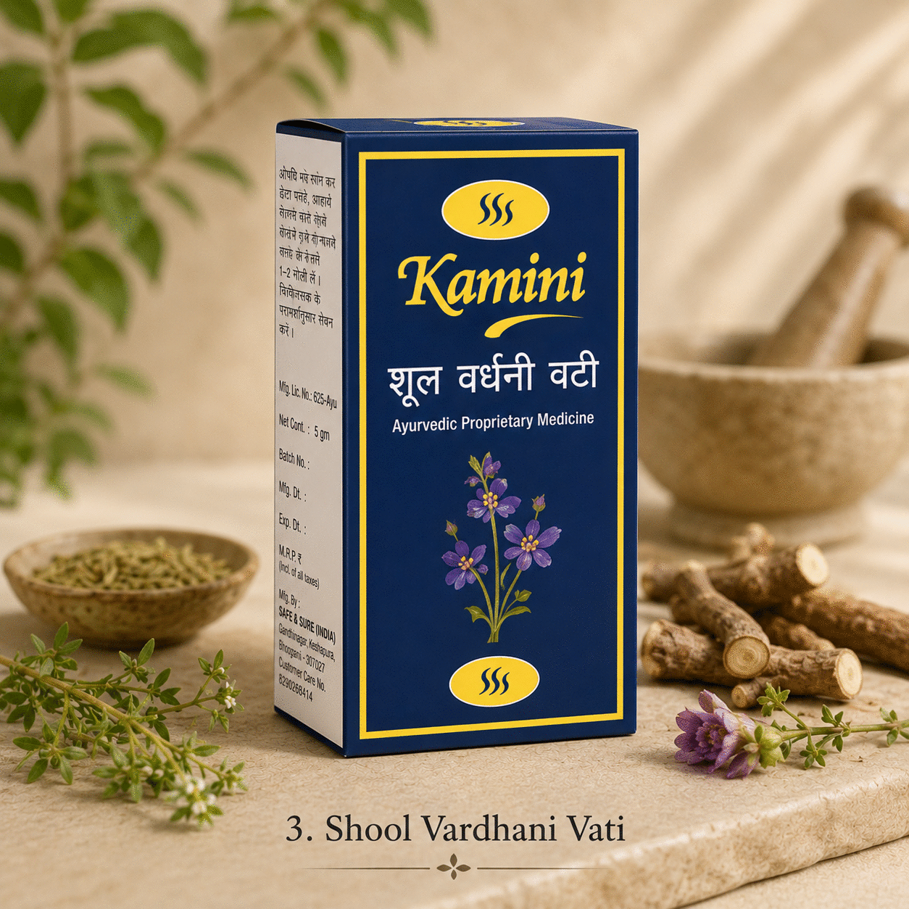
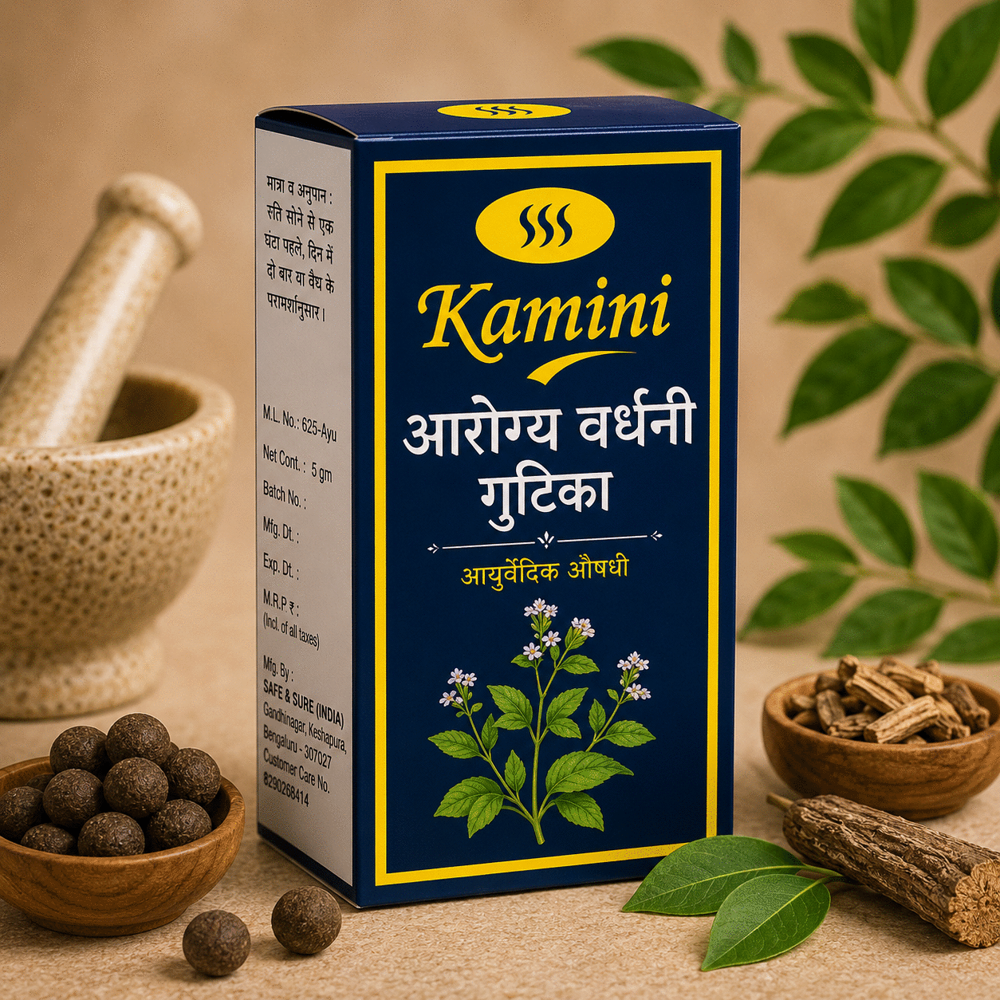
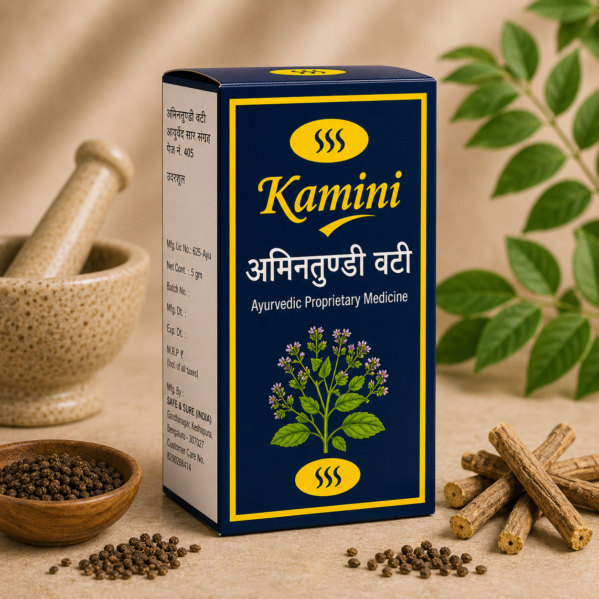

What exactly is Sanjeevni Vati, and when do vaidyas prescribe it?
Inside the seasonal-fever formulation that has stayed in classical practice for centuries. Ingredients, dosage, and when to start.
Read article →Eleven classical Ayurvedic formulations — Vati, Gutika and Ras — made the traditional way and dispensed in the gold-and-navy Kamini pack you can trust. For people who read labels.

Ayurveda treats the cause, not the symptom. Choose what you'd like to address and we'll surface the classical Kamini formulation our vaidyas recommend.

Safe & Sure (India) was founded in Bengaluru with a simple promise: produce classical Ayurvedic medicine the way the texts prescribe it — right ingredients, right ratios, right process. Nothing diluted for shelf life. Nothing added for marketing. The Kamini line is the result.
Cited in Ayurved Sar Sangrah (pg. 451). Containing Akik, Praval, Mukta and Arjun — herbs and bhasmas long used to strengthen the hridya. One tablet, twice a day, with warm milk.
Documented in classical Ayurvedic texts for centuries as a treatment for unmada and shiroroga, sarpagandha is the herb modern science now studies for its naturally-occurring reserpine alkaloids — long associated with calming an over-active mind and supporting healthy blood pressure.

"I have been recommending Prabhakar Vati from Kamini to my heart patients for two years. The quality of bhasmas is consistent — that is what matters."

"Sarpagandhayan Vati helped me sleep again after months of restlessness. I take it with warm milk before bed, just as my vaidya recommended."
A 20-minute call with one of our partnered Ayurvedic physicians will give you a personalised prakriti reading and a clear formulation plan. Classical medicine works best when prescribed for your constitution — we'd rather you take what's right than what's popular.
Inside the seasonal-fever formulation that has stayed in classical practice for centuries. Ingredients, dosage, and when to start.
Read article →
A short history of one of Ayurveda's most-used formulations, and the modern conditions it's still indicated for.
Read article →
Three formulations, one morning ritual, zero apps. The protocol our vaidyas use on themselves and recommend to busy patients.
Read article →